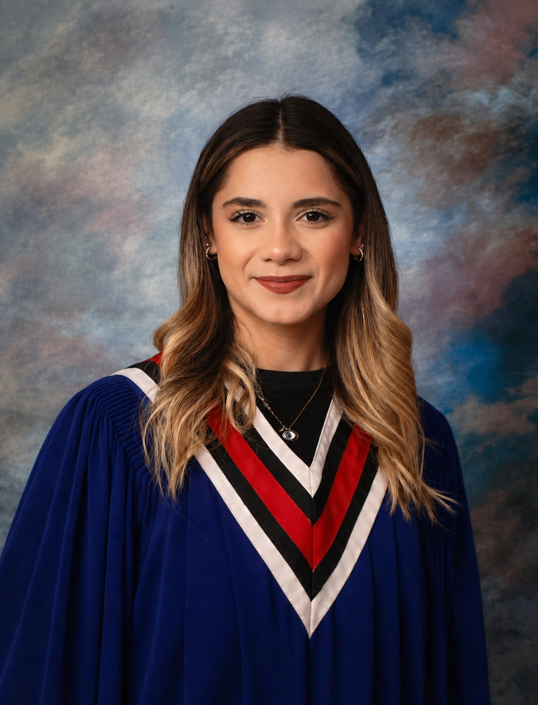

Artificial Intelligence student at Radboud University in the Netherlands. Interested in building intelligent systems, understanding how the human brain works, and developing innovative solutions that make life easier, smarter, and more meaningful.

I’m Helin, an Artificial Intelligence student at Radboud University with a strong passion for building intelligent systems that make life smarter, simpler, and more meaningful. I’ve always been curious about how people think, learn, and make decisions, which naturally led me toward AI—where human cognition and technology come together. My interest in problem-solving and technology grew through programming and hands-on technical experiences like robotics, where I learned the value of teamwork, precision, and practical thinking. These experiences helped shape the way I approach challenges—by staying analytical, adaptable, and solution-oriented. Having studied across Türkiye, Canada, and now the Netherlands, I’ve developed strong adaptability, communication skills, and a global perspective. I’m fluent in English and Turkish, with additional proficiency in German, and I enjoy working in diverse, collaborative environments . I believe technology should not only be smart, but also useful and human-centered. Whether I’m solving technical challenges, learning new concepts, or working with a team, I aim to bring curiosity, precision, and genuine enthusiasm to everything I do.
Participated in the Surrey Robotics League competitions and worked as a core member of the robotics club. Collaborated with teammates to design, build, program, and test competitive VEX V5 robots.
Worked on university projects involving Git, GitLab, LaTeX, Python, and collaborative version control systems.
Earned the BTEC Level 1 Award in Applied Science, gaining practical laboratory experience and foundational knowledge in scientific investigation, experimental procedures, and laboratory techniques.
Bachelor of Artificial Intelligence
2025 – Present
Nijmegen, Netherlands
British Columbia Certificate of Graduation
2023 – 2025
British Columbia, Canada
I’m always open to new opportunities, collaborations, and meaningful conversations.